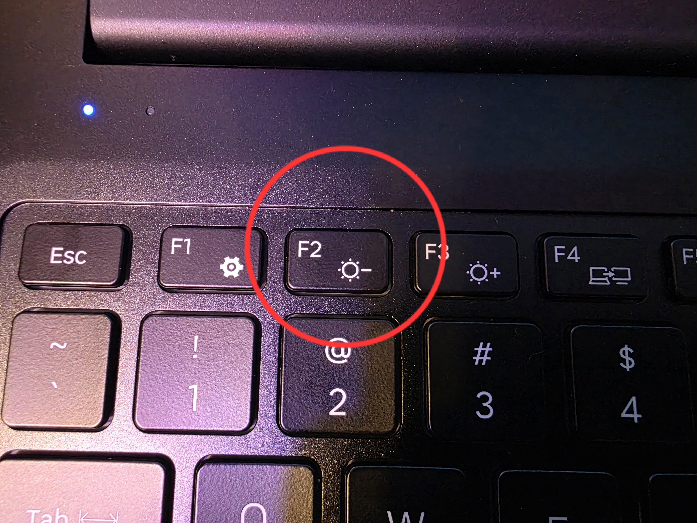
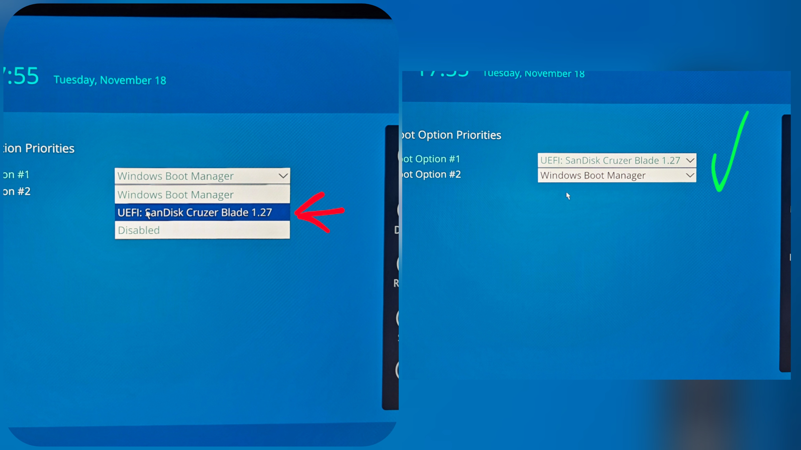
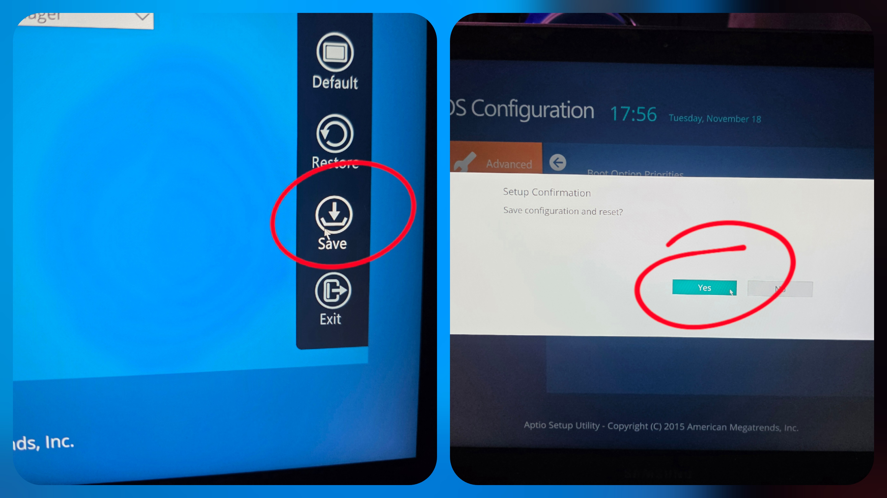
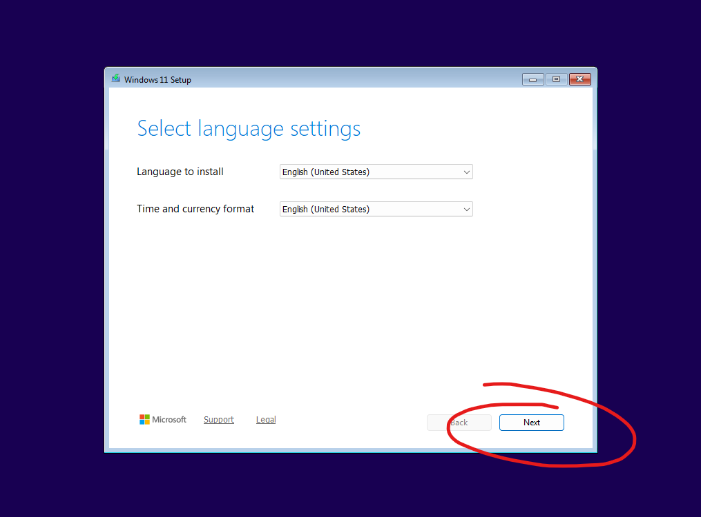
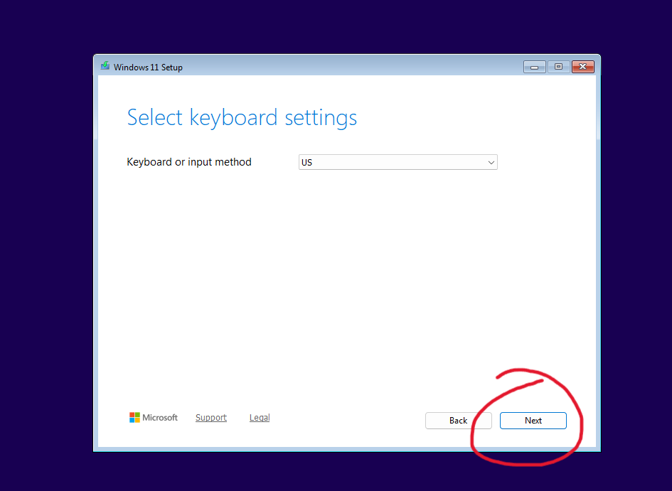
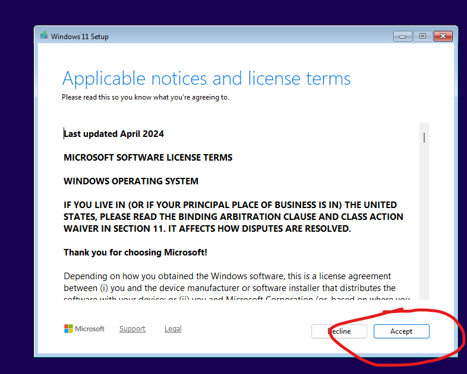
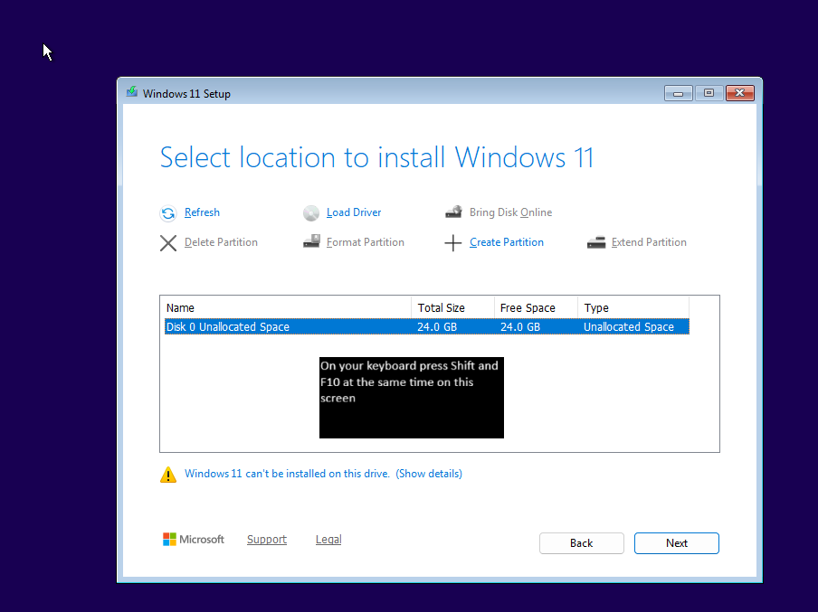
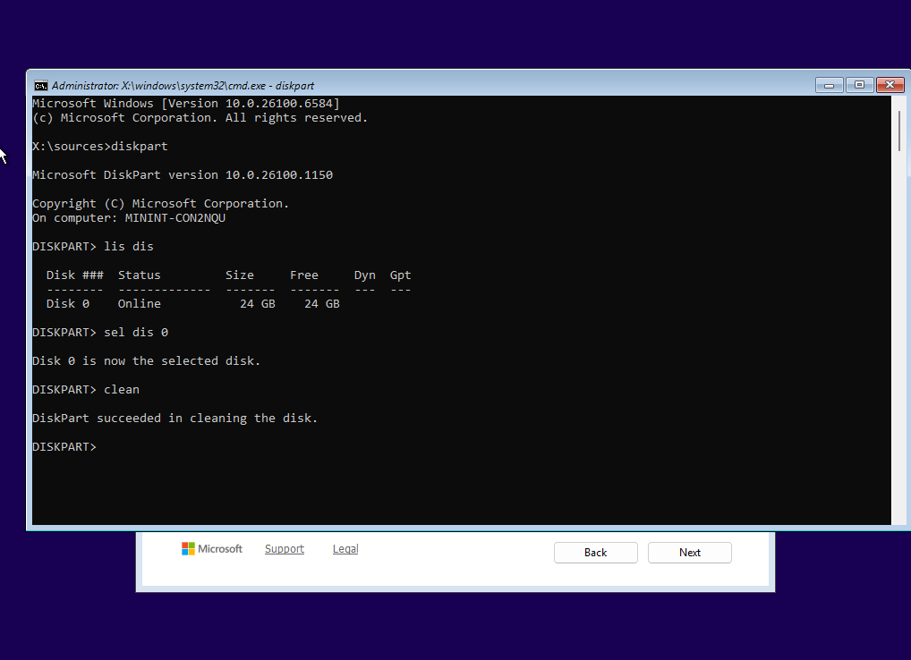
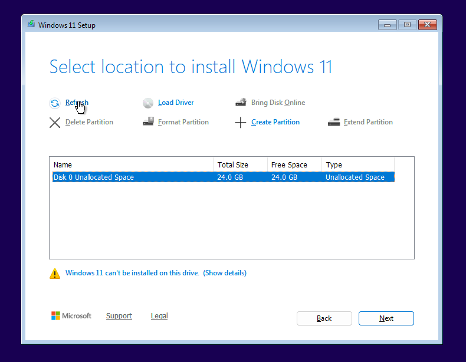
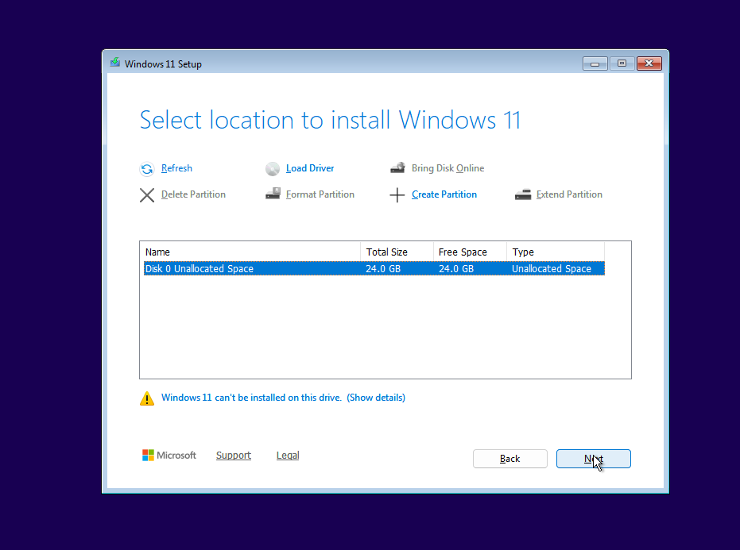

Windows 11 Installation Guide
1. Turn on the laptop and repeatedly press F2 to enter the BIOS.

2. Go to the Boot tab → Boot Options.

3. Set the Samsung Fit USB drive as the first boot device.

4. Save and exit the BIOS.

5. At the Windows installer, click Next.

6. When asked to choose keyboard/language settings, click Next.

7. Accept the License Agreement (EULA) and press Next.

8. On “Where do you want to install Windows?”, press Shift + F10 to open Command Prompt.

9. Type these commands one at a time:
diskpartlist disk
10. After I tell you the correct disk number, run:

sel dis 0← replace 0 with the number I tell youclean
11. Close Command Prompt and press Refresh.

12. Select the unallocated space on the drive and click Next.

13. Windows will now install automatically.
The laptop may restart several times — totally normal.